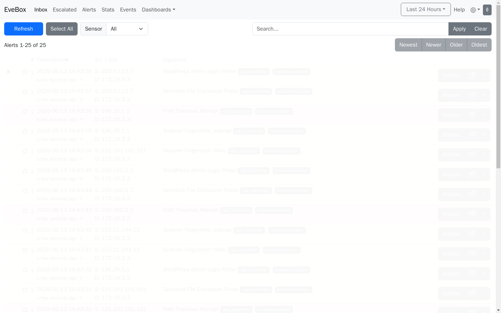
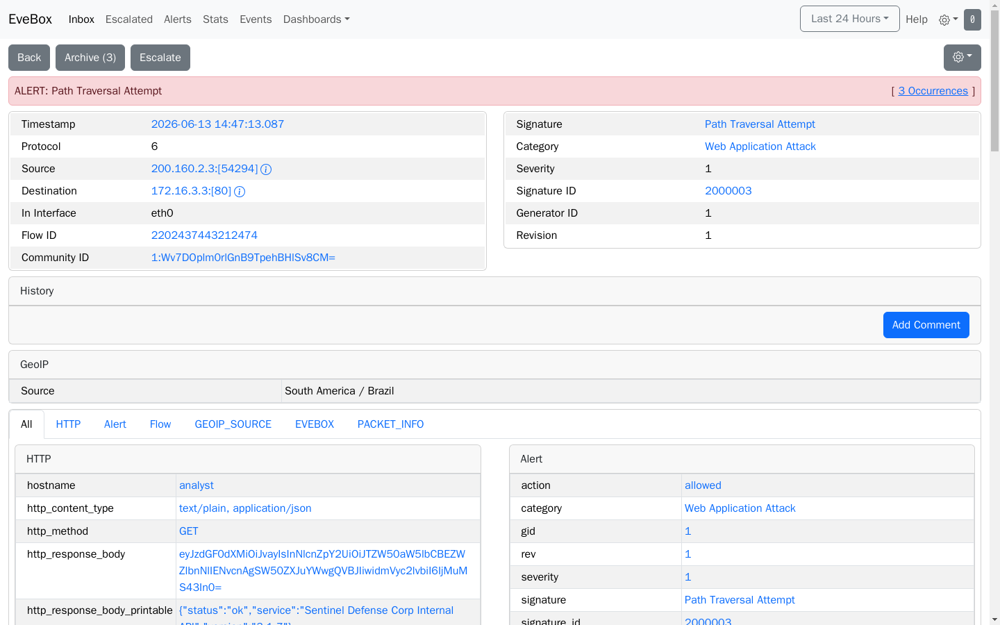

Exercise 14.3: SOC Triage with EveBox
Before You Begin
Earlier Week 14 exercises had you write Suricata rules and read alerts straight from eve.json at the terminal. Exercise 14.3 adds the missing layer a working SOC relies on: live alert triage in a browser-based console. You will still write Suricata rules, but instead of grepping JSON, you will work the alerts the way a Tier 1 analyst does on shift, from a SIEM dashboard that shows new events as they arrive.
Your VPN must be connected and both your terminal and web browser open. You should be comfortable with SSH login, basic Linux navigation, and the HTTP request structure from earlier exercises.
Scenario
Aurora Medical Group, a regional healthcare network headquartered in Portland, Oregon, runs a public-facing patient portal in its DMZ (Demilitarized Zone). Overnight, the SOC (Security Operations Center) pulse board lit up with anomalous HTTP traffic targeting the corporate subnet. The traffic looks like active scanning and exploitation, not background noise.
You are the Tier 1 SOC analyst on the night shift. The CISO (Chief Information Security Officer), Dr. Priya Sharma, messages you on the ops bridge before logging off:
"The Suricata sensor is running but it has no custom rules loaded. Spin up detection for what you're seeing, then use the EveBox console to triage the alerts; I don't want you grepping eve.json at 3am. Pull every IOC you can out of the payloads. The HIPAA notification clock starts the moment we confirm PHI exposure, so we need clean evidence, not guesses."
Your toolkit includes SSH access to the Aurora IDS sensor (Suricata and tcpdump), SSH access to the patient portal web host, and an EveBox web console that live-tails the sensor's eve.json file. Attack traffic is ongoing; new requests arrive every few seconds.
Credentials:
- IDS Sensor SSH:
tier1/Aur0r4_S0C# - Patient Portal SSH:
portaladmin/P4t13nt_P0rt4l# - EveBox Web Console:
http://<evebox_ip>:5636(no login required in lab mode)
Why this matters
Aurora's overnight shift gets paged by hundreds of low-severity alerts every week. The difference between a Tier 1 analyst who spots a real intrusion and one who misses it is often not the detection rule; it is the time the analyst spends in a triage tool. A SOC running without a console means every investigation begins with jq and grep, which is fine for a researcher but does not scale during a live incident with a breach disclosure deadline.
- HIPAA (Health Insurance Portability and Accountability Act) requires patient notification within 60 days, and the clock starts at discovery. Audit-ready evidence tied to a triage timeline beats a scratchpad of copy-pasted terminal output.
- The CISO presents a post-incident report to the hospital board. Screenshots from a SIEM console carry more weight than terminal scrollback.
- Cyber insurance carriers often require SIEM dashboards as a coverage precondition. A claim filed without SIEM-sourced evidence may be denied or reduced.
- The next shift inherits whatever you leave behind. Alerts marked "reviewed" in a shared console carry forward; a terminal session does not.
Your Objectives
- Observe live attack traffic on the Aurora IDS sensor using packet capture
- Write Suricata rules that detect SQL injection and command injection
- Triage the resulting alerts in the EveBox web console
- Extract IOCs (indicators of compromise) from the alert drill-down view
- Investigate the patient portal nginx access log for attacker tooling fingerprints
- Assemble the flag parts and submit the completed flag
Background: Alert Triage in a SIEM Console
A SIEM (Security Information and Event Management) console sits on top of raw detection output and organizes events for a human analyst. Suricata produces the raw alerts; a tool like EveBox reads that stream and presents each alert as a clickable row with filters, drill-down panels, and archive state. Analysts call this workflow "triage": sorting a queue of alerts by priority, investigating the ones that matter, and marking the rest as handled.
A common industry pattern pairs Suricata (detection) with a dashboard (triage) and a longer-term store (search and analytics). Wazuh, SELKS, and the Elastic stack all fill the same slot as EveBox; they differ in weight, storage backend, and feature depth, not in concept. What matters for your shift is that the dashboard shows new alerts as they arrive, exposes the captured payload for each alert, and lets you export evidence without hand-rolling shell pipelines.
The following diagram illustrates the data flow on the Aurora sensor:
graph LR
A["Network Traffic<br/>(attacker HTTP)"] --> B["Suricata<br/>IDS Engine"]
B --> C{"Rule<br/>Match?"}
C -->|"Yes"| D["Alert appended<br/>to eve.json"]
C -->|"No"| E["Packet passes<br/>unlogged"]
D --> F["EveBox tails<br/>eve.json"]
F --> G["Analyst opens<br/>console in browser"]
style A fill:#4a90d9,color:#fff
style B fill:#4a90d9,color:#fff
style C fill:#e8a735,color:#fff
style D fill:#d9534f,color:#fff
style E fill:#888,color:#fff
style F fill:#0a6e8a,color:#fff
style G fill:#0f8a7f,color:#fff- Network traffic arrives at the sensor's network interface
- Suricata inspects each packet against its loaded rules
- Rule match: an alert record is appended to
/var/log/suricata/eve.json - EveBox tails the file as new records land and writes them into its own SQLite store
- Analyst opens the web console and works the queue
For Aurora's sensor the eve.json file lives on a shared Docker volume that both the Suricata container and the EveBox container can see, so an alert written by Suricata shows up in the console within a second or two.
Tool Primer: EveBox
EveBox is an open-source web front end for Suricata alerts. The lab runs it with an embedded SQLite store, no-auth lab mode, and plain HTTP on port 5636.
Key views you will use tonight:
| View | Purpose |
|---|---|
| Inbox | Queue of unhandled alerts, newest first |
| Alert detail | Full JSON record for the selected alert, including URL, payload, source IP |
| Events | All eve.json events (flows, HTTP metadata, DNS), not only alerts |
| Archived | Alerts you have marked as triaged |
Keyboard shortcuts worth remembering:
| Key | Action |
|---|---|
j / k |
Next / previous alert in the list |
o |
Open selected alert |
F |
Toggle filter bar |
? |
Full shortcut reference |
EveBox groups duplicate alerts in the Inbox by default: when the same rule fires ten times in a row for the same source and destination, you see one row with a count, not ten rows. The grouping is deliberate; you triage the group, not each packet. Use the Events view if you need to see every individual record.
Walkthrough
Step 1: Launch the Exercise
The lab provisions four containers: the attacker, the Aurora IDS sensor, the patient portal, and the EveBox console. All four must be running before you begin triage work.
- Open the Network Security course view and find Aurora Medical Group: SOC Triage with EveBox
- Click Launch and wait for the status to change to Running
- Open the Exercise Network panel. It lists four IPs, each tied to a role you will use in this walkthrough
Record the IPs from the panel and note which tool or credential you will use against each one. Every node in this lab sits on the same /24 subnet; only the last octet (the IP offset) changes between roles. Keep this table open in a second tab while you work:
| Role (Exercise Network label) | Last octet | Port you will use | What you do here |
|---|---|---|---|
| Patient Portal | .17 |
TCP 22 (SSH) | SSH as portaladmin to read the nginx access log for the attacker User-Agent |
| Unknown Attacker | .31 |
n/a | Source of the automated attack traffic; you do not log in here |
| Aurora IDS Sensor | .47 |
TCP 22 (SSH) | SSH as tier1 to run tcpdump, write Suricata rules, reload the engine |
| EveBox SOC Console | .53 |
TCP 5636 (HTTP) | Open in a browser, no login, to triage alerts and pull IOCs from payloads |
Attack traffic begins flowing automatically within about twenty seconds of launch. Your sensor starts receiving malicious HTTP requests immediately after that.
Where to find each IP
The four IPs are all shown in the Exercise Network panel on the lab page, one row per node. The IDS sensor and patient portal are the SSH targets; EveBox is the one you open in the browser. If you spawn the lab more than once, the IPs change between runs, so read them from the panel each session rather than saving them from a previous attempt.
Step 2: SSH to the Aurora IDS Sensor
SSH to the Aurora IDS sensor
Most of the detection work runs on the sensor. Open a terminal on your Kali and connect with the Tier 1 analyst credentials from the scenario block. Replace <ids_sensor_ip> with the sensor IP from the Exercise Network panel.
When prompted for the password, enter:
The hostname in your shell prompt should read aurora-sensor. That confirms you landed on the right host.
Step 3: Confirm Suricata Is Running
Confirm Suricata is running on the sensor
Writing rules against a dead engine wastes your shift. Check the Suricata process before touching the rules file. Run this in the sensor SSH session.
A numeric process ID in the output means the engine is up. An empty response means Suricata is not running; re-check that the lab finished launching.
Note that pgrep -x suricata does not reliably detect Suricata in daemon mode. The main thread renames itself to Suricata-Main, so the exact-match flag misses it. Use pidof suricata or pgrep -f suricata instead.
Step 4: Watch Live Attack Traffic
Capture live attack traffic with tcpdump
Before writing rules, you need to see what the attacker is sending. Raw capture on port 80 reveals the two distinct HTTP payloads you will translate into signatures.
Let the capture run for ten to fifteen seconds, then stop it with Ctrl+C. Two patterns should stand out in the output.
Pattern 1: SQL injection in GET requests. A URL query string containing UNION SELECT is not normal user input. The attacker is trying to append a malicious SELECT clause to a legitimate search query. A typical URI looks like:
Pattern 2: Command injection in POST bodies. A form body containing shell syntax such as ;cat /etc/shadow is not valid form input. The attacker is trying to break out of the server-side handler and read system files. A typical POST body looks like:
Note both patterns carefully. Each one becomes a Suricata rule.
Step 5: Write Suricata Rules for the Two Attack Vectors
Open the local rules file on the sensor
Custom signatures live in /etc/suricata/rules/local.rules on the sensor. Open the file in nano.
The editor opens an empty or near-empty file ready for your two signatures.
Add the two rules below, one per line.
Rule 1: SQL injection detection. The content:"UNION SELECT" check is scoped to the HTTP URI, so response bodies and log viewers that happen to contain those words do not fire the rule. The classtype:web-application-attack keyword tags the alert with a category that Suricata's classification file maps to severity 1 (high). Without a classtype the alert lands with an empty category and severity 3, and the EveBox Alerts view hides or buries it.
alert http any any -> any any (msg:"SQLi Attack Detected"; content:"UNION SELECT"; nocase; http_uri; classtype:web-application-attack; sid:1000001; rev:1;)
Rule 2: Command injection detection. The http_client_body modifier limits the match to the request body the client sent, so response bodies from any file server do not create false positives. The same classtype is used so both rules share a category in the console.
alert http any any -> any any (msg:"Command Injection Detected"; content:"cat /etc"; nocase; http_client_body; classtype:web-application-attack; sid:1000002; rev:1;)
Save and exit nano with Ctrl+O, Enter, then Ctrl+X.
Why classtype matters for triage
A Suricata alert written without classtype fires correctly and shows up under the Events view in EveBox, because every alert is also an event. It does not reliably appear under Alerts or the Inbox, because those views filter and group by category and severity. Classification mappings live in /etc/suricata/classification.config; run grep web-application /etc/suricata/classification.config on the sensor to see which severity each category maps to.
Step 6: Reload Suricata Without Restarting
Reload Suricata rules with a USR2 signal
Suricata does not watch the rules file for changes. Send the USR2 signal to the running engine and it re-reads every configured rule file without dropping monitored traffic.
No output from the command means the signal was delivered. Suricata takes a few seconds to parse the new rules. If instead you see the kill usage help print, that means the $(...) expansion returned nothing; re-check Step 3.
Confirm the reload actually loaded your rules
The most common failure in this exercise is that the USR2 was delivered but Suricata ended up with zero rules loaded (bad path, bad syntax, wrong file, stale process). A silent reload looks identical to a bad reload, so always verify.
Query the Suricata command socket for loaded rule count
Run a one-line query against Suricata's command socket to see how many rules are active right now.
Expected output (formatted for clarity):
Interpret the result:
rules_loaded |
rules_failed |
Meaning | What to do |
|---|---|---|---|
2 |
0 |
Both of your rules are active | Move on to Step 7 |
0 |
0 |
Rules file is empty, unreadable, or the reload never reached Suricata | Re-check Step 5 (right path, right content), then re-run the USR2 |
1 or less with rules_failed > 0 |
nonzero | One or more rules have a syntax error and were skipped | Tail /var/log/suricata/suricata.log for an Error parsing signature line, fix the broken rule, then re-run the USR2 |
Confirm the reload in the Suricata log
You can also confirm the reload in the Suricata log directly.
Look for a line reading rule reload complete, preceded by a line like 2 signatures processed. If the most recent signatures processed line says 0, your edits never reached the engine even though the signal was delivered (usually a file-path or permission problem).
If this step shows 0 rules loaded, stop here
Alerts will not fire, EveBox will stay empty under Alerts and Escalated, and you will waste time looking for IOCs that do not exist yet. The Events view in EveBox will still show HTTP traffic from the attacker (because Suricata logs every HTTP transaction regardless of rules), which is a common source of confusion. Confirm rules_loaded: 2 before moving on.
For the rest of the walkthrough, keep this SSH session open. You may need to come back to the sensor to run follow-up commands.
Step 7: Open the EveBox Console in Your Browser
Now the console does the work. Open a new browser tab and navigate to the EveBox URL, substituting the IP from the Exercise Network panel:
The lab runs EveBox in no-auth mode, so the Inbox view loads directly. Wait ten to twenty seconds after the reload, then refresh the Inbox. Two alert rows should appear:
| Signature | Expected count |
|---|---|
| SQLi Attack Detected | one per attack cycle (about one every eight seconds) |
| Command Injection Detected | one per attack cycle |
If the Inbox is empty, wait for the next attack cycle and refresh. If it is still empty after thirty seconds, revisit Step 5; a mistyped rule does not fire.

Step 8: Read the Flag from the Alert User-Agent (Fast Path)
Click the SQLi Attack Detected row in the Inbox. EveBox opens the alert detail panel on the right. Scroll to the http section and find the http_user_agent field.

The User-Agent has this shape (read the real flag value from the live alert, it is not printed here):
The attacker's custom tool brands every outbound request with a session identifier that happens to embed the full correlation flag in OCR{...} format. That is an OpSec failure on the attacker's part and a gift to the triage analyst on yours: one field, one read, whole flag.
Record the OCR{...} value as your answer to Step 12. You can also verify the same User-Agent appears on the Command Injection Detected alert, which confirms both attacks came from the same tool.
Why the User-Agent is worth checking first
Attacker tooling often tags its own traffic with internal build identifiers, campaign IDs, or trace tokens. Unlike the URL and POST body (which carry the attacker's payload), the User-Agent is metadata about the tool itself, and it is often the sloppiest part of a custom attack framework. Always read the User-Agent before you pull the rest of the payload apart.
Step 8B: Extract the Campaign Tag from the URL (Forensic Path)
The User-Agent read above is the fast path. The forensic path is to pull the campaign tracking tag directly out of the attacker's request URL, which is also visible in the same alert.
In the same http section of the SQLi alert detail, find the url field. It will look something like (values redacted):
"http": {
"hostname": "analyst",
"url": "/search?q=1'%20UNION%20SELECT%20username,password%20FROM%20credentials--&campaign=REDACTED"
}
The campaign= parameter is a tracking tag the attacker embedded in the exploit URL. Copy the value after the equals sign and before the next & (or the end of the URL, if campaign is the last parameter). Record it as flag part 1 of a three-part assembly.
Confirm the campaign tag from the sensor terminal
If you prefer to confirm the value from the terminal, return to the sensor SSH session and run this jq pipeline against the live eve.json.
jq -r 'select(.alert.signature_id == 1000001) | .http.url' /var/log/suricata/eve.json | grep -oP 'campaign=\K[^&]+' | head -1
Both paths produce the same value. The EveBox view is your primary triage tool; the terminal fallback is useful when you need to batch-extract many tags at once.
Step 9: Extract the CMDi Exfil Tag
Return to the EveBox Inbox and click the Command Injection Detected row. The alert detail for a POST-body match does not populate http.url (because the injection lives in the body, not the URL); look for the payload_printable field instead. That field contains the raw request body Suricata saw on the wire.
Example snippet:
"payload_printable": "POST /api/diagnostic HTTP/1.1\r\n...host=10.200.0.1;cat /etc/shadow&exfil=REDACTED..."
The exfil= parameter is the attacker's data exfiltration tag, the analog of the campaign tag but tied to the command injection stream. Copy the value between exfil= and the next & or whitespace, and record it as flag part 2.
Cross-check the exfil tag from the sensor terminal
Run the terminal equivalent against eve.json if you want to cross-check the value EveBox showed.
jq -r 'select(.alert.signature_id == 1000002) | .payload_printable' /var/log/suricata/eve.json | grep -oP 'exfil=\K[^& \r\n]+' | head -1
The single value printed is flag part 2, matching what you read in the EveBox CMDi alert.
Step 10: Correlate with the Patient Portal nginx Log
SSH to the patient portal
The CISO mentioned the attacker may have hit the portal too. Open a second terminal and SSH to the patient portal with the portaladmin credentials. Replace <patient_portal_ip> with the portal IP from the Exercise Network panel.
When prompted, enter:
A shell prompt on the portal host confirms you are in.
Extract the attacker User-Agent from the nginx log
The attacker's automated tool identifies itself with a distinctive User-Agent string. Normal browsers use Mozilla/5.0 ...; this attacker uses a custom value beginning with AuroraBleed/. Extract it with grep on the portal host.
The value after the slash is flag part 3.
Record Your Findings
Document each piece of evidence you collected during triage.
SQLi campaign tag (from Step 8):
CMDi exfil tag (from Step 9):
Attacker User-Agent value (from Step 10):
Assembled flag:
Suricata rules you wrote:
EveBox alert detail (screenshot or copied JSON):
Step 11: Interpret the Results
Review the three IOCs and what they tell you about the attacker.
The campaign tag in the SQLi URL labels which exploitation campaign generated the data. Attackers tag payloads so they can correlate stolen data back to specific targets or timeframes. Finding the tag means the attack is organized, not opportunistic.
The exfil tag in the CMDi body is the analogous label for the data-exfiltration channel. The presence of both tags together suggests parallel operations run by the same adversary, each labeled for internal tracking.
The AuroraBleed User-Agent appears on traffic to both the sensor and the patient portal, just with different suffixes: the sensor attacks carry AuroraBleed/OCR{...} (session-branded, full flag), the portal probes carry AuroraBleed/pr0 (shortened build tag). Both confirm the same tool fingerprint. Custom tool identifiers link attack streams across hosts even when source IP addresses rotate.
Assemble the three values with underscores between them: OCR{________}.
Flag Format
Use the tokens in the order you discovered them:
OCR{<sqli_token>_<cmdi_token>_<ua_token>}
Where <sqli_token> is from the EveBox SQLi alert URL, <cmdi_token> is from the EveBox CMDi alert payload, and <ua_token> is from the patient portal nginx access log.
Step 12: Submit the Flag
Return to the Network Security course view, open the Aurora lab, and paste the assembled flag in OCR{...} format into the Submit Flag field. The platform confirms or rejects the submission. If the submission is rejected, double-check each extracted value and ensure the parts are joined with underscores in the correct order.
Analysis Questions
1. The EveBox Inbox groups repeated alerts from the same attack cycle into a single row with a count. Why do SIEM consoles group alerts by default, and when would that grouping hide something important?
Reveal Answer
Grouping prevents the Inbox from drowning in repeats when a noisy scanner hits the sensor; a fifty-packet flood becomes one row with a count of fifty, and the analyst still sees it once. The hidden risk is that two similar but distinct attacks can collapse into the same group if the dedup key is too coarse. An analyst who only opens the first event in a group can miss a later event with a different payload, a different source IP, or a different User-Agent. Good triage practice: open the group, scan the range of source IPs and payload values, and only archive after confirming the range is consistent with a single campaign.
2. For the SQLi alert the tracking tag was in http.url, but for the CMDi alert it was in payload_printable instead. Why does EveBox populate different fields for the two cases?
Reveal Answer
Suricata parses HTTP protocol fields for GET requests and exposes them as structured values, so the URL is a first-class field and the query string is available directly as http.url. POST bodies are opaque to the HTTP parser without deep inspection, so the command injection rule reads from the raw client body. Suricata still logs the bytes that triggered the match under payload_printable, which is where the analyst has to look for the injected parameters. The practical takeaway: structured fields are faster to triage, but the raw payload is always the ground truth and sometimes the only place the IOC lives.
3. The same detection could be done entirely from the terminal with jq and grep, with no EveBox at all. What does a SIEM console give a working SOC that a terminal pipeline does not?
Reveal Answer
A console gives the team a shared, auditable workspace. Every analyst sees the same queue, alerts carry state (new, reviewed, archived), and evidence can be exported with timestamps and source attribution. A terminal pipeline is per-analyst and per-session; when the shift changes, the next person has to rebuild the view. A console also lets an on-call responder open an alert from a phone or an out-of-band workstation without shell access to the sensor. The rules and logs are the source of truth in either case, but the console is what makes the SOC a team instead of a collection of individuals.
Key Takeaways
- Suricata writes the alerts; a SIEM console makes them triageable. A SOC with detection rules but no console is still blind in the practical sense, because no analyst can work a raw JSON stream at the pace of a live incident.
- Shared-volume log delivery is the simplest way to pair a sensor with a console. Heavier SIEMs replace the volume with a message queue or an indexer, but the data model is the same: Suricata produces eve.json, the console consumes it.
- Alert detail drives IOC extraction. Knowing which field carries the payload (
http.urlfor GET,payload_printablefor POST) is the difference between a ten-second extraction and a ten-minute grep session. - Fingerprints survive rotation. Attacker IPs change; User-Agent strings, internal tracking tags, and tool version identifiers survive longer and often link attack streams across hosts.
- A console is team infrastructure. Alerts in a shared queue hand off across shifts; terminal sessions do not. Week 15 ties IDS work into the capstone CTF, where you will combine detection, enumeration, and exploitation across a multi-host environment.